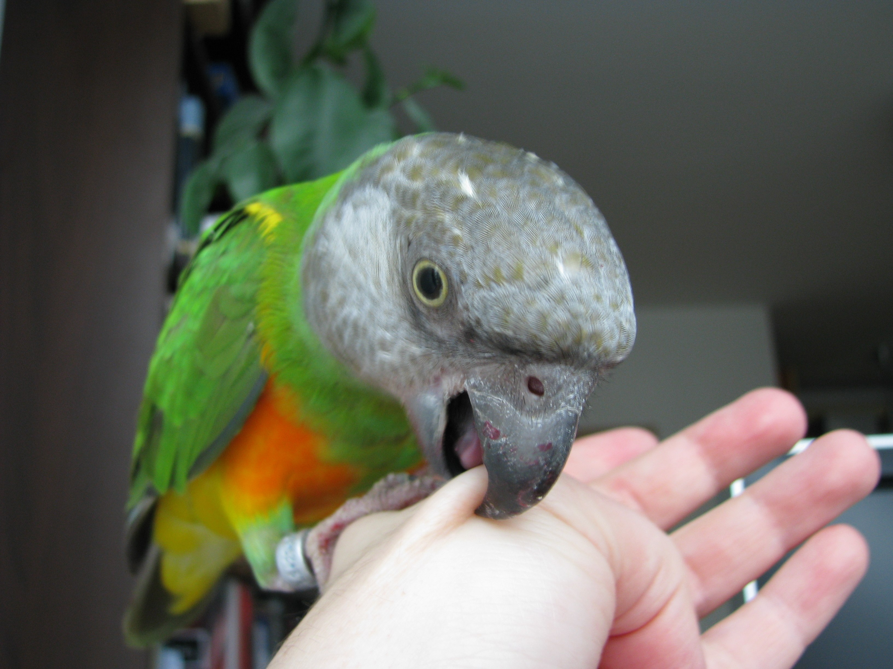

| |
Working With Baby Birds
|
|  |
Birds use their beaks for a variety of tasks, including eating, exploring, nest excavation and defense. A clear definition for each type of "bite” clarifies this discussion.
Type 1: If your skin is a little red or your bird plucked a few stray hairs, it was touching and tasting, not biting.
Type 2: When the beak leaves a small impression and redness on the skin, this is a "nip” or pinch.
Type 3: Bruising or bleeding constitutes a bite.
Type 4: If your bird leaves a deep bruise or cut and there’s lots of bleeding, this is a "chomp.”
Contrary to opinions expressed in the past, we parrot behavior consultants now put more emphasis on teaching parrots to comply happily whenever possible, instead of muscling in and forcing the issue.
If your parrot will let others pet her but bites after a few minutes, this means that people are trying to pet her for too long a period. The pet owner’s job is to figure out how long is too long. If you time the interactions, you will get a feel for your bird’s tolerance. Once you understand that, you can remove her from the situation before she loses patience and lashes out. If she accepts being stroked for 10 minutes, then move her away after five to seven minutes. You will begin to have no further problem with her biting those who pet her. Her patience will increase once she no longer feels pressured.
If you observe your parrot closely, you will find that she warns of an impending bite with body language that humans often do not understand. Despite their proclivity for noisy interaction, parrots communicate mostly through subtle changes in body posture and feather position. If we are oblivious, we tend to blunder along, being incredibly rude from the parrot’s point of view. As far as they are concerned, they are being perfectly clear with their feelings. Unable to know that we do not understand what they are telling us, they likely perceive humans as ignorant.
When she nips you while you put her into the cage, she might be trying to tell you that she would rather be with you than alone in her cage, or you might be holding her in such a way that she has to step backward into the cage, which many parrots resist. Whatever the reason, you can change her behavior by teaching her that lovely things happen when she politely enters the cage, such as a reward.
If you put her into the cage backward, try facing her inward to see if that helps. Additionally, show her that you just dropped her favorite treat into her bowl. This treat should be used only as a reward. Now she might be more inclined to return to the cage to retrieve her reward. My macaw always receives a nut for going into her cage, so the bird cage becomes a good thing.
As an alternative, step her down into her cage and lavishly praise her politeness, then instantly bring her out to play some more. Repeat this exercise several times; put her in the cage, praise her, and then bring her out for more attention. By combining the training, praise and special food treats, she will learn to enter her cage with pleasure.
If your parrot is not hurting you when she bites you, she is telling you something in a polite and gentle fashion. A nip is more of a pinch. There is discomfort involved, but it isn’t a bite. In other words, she is not nipping just because she is using her beak. That is tantamount to assuming that hands are only used to damage, no matter how gentle their touch.
Do not try to pet your bird if she screams and bites. Forcing your affection on your bird is astonishingly rude. Unfortunately, most people are accustomed to dogs that always seem to enjoy petting. Many people perceive parrots as dogs with feathers, so they assume there is something wrong with a parrot if it doesn’t want to be petted. This is an erroneous conclusion. Like humans, parrots have opinions about what is permitted with their bodies, and they — like us — have the right to enforce their beliefs.
|
|
|